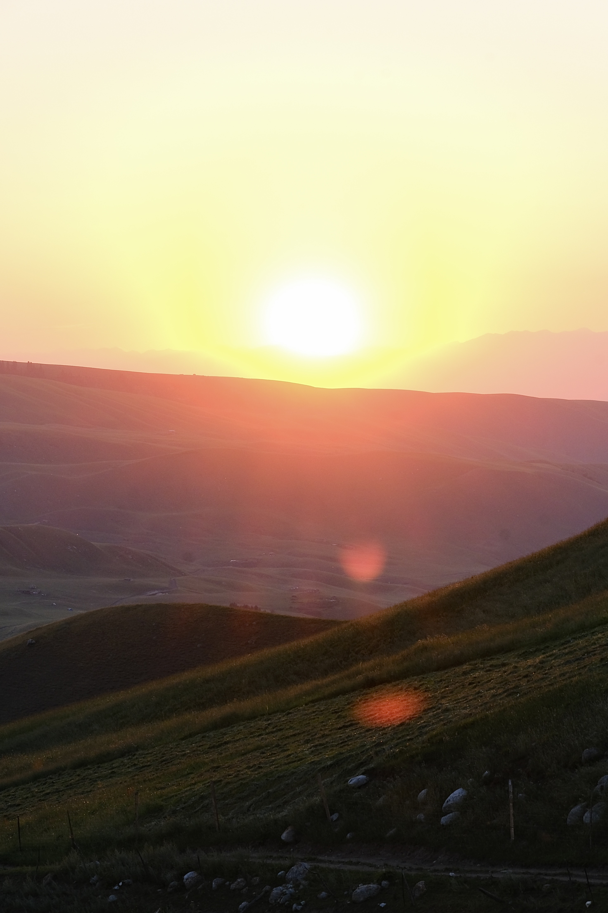
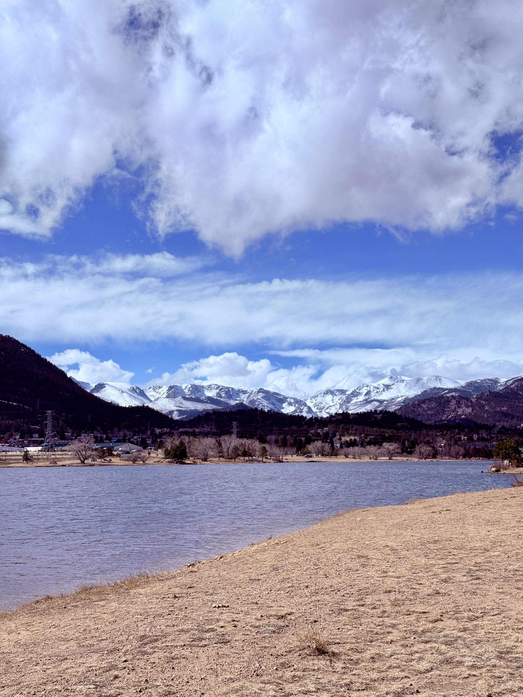
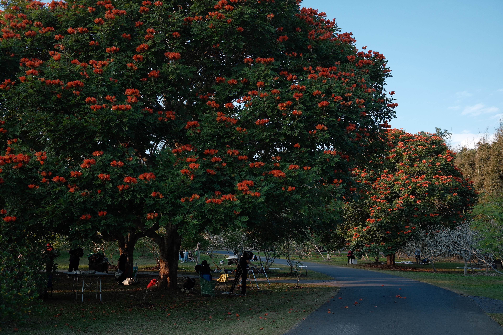
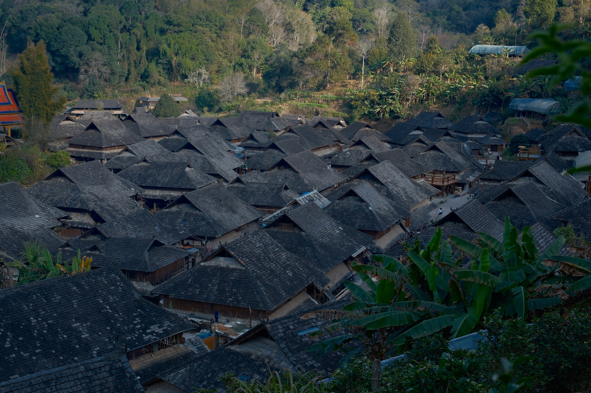
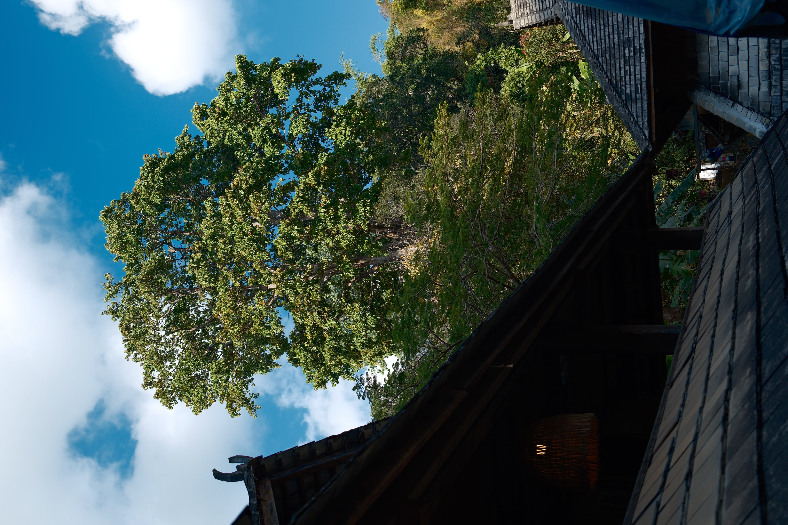

Qiuyuan Chen
Personal Photography
Selected Work

Yi Li · China

Yi Li · China

Yi Li · China
Sai Li Mu · China

Sai Li Mu · China

Colorado Springs · USA

Colorado Springs · USA

Estes · USA

Estes · USA

Denver · USA

Xi Shuang Ban Na · China

Xi Shuang Ban Na · China

Pu Er · China

Pu Er · China

New York · USA